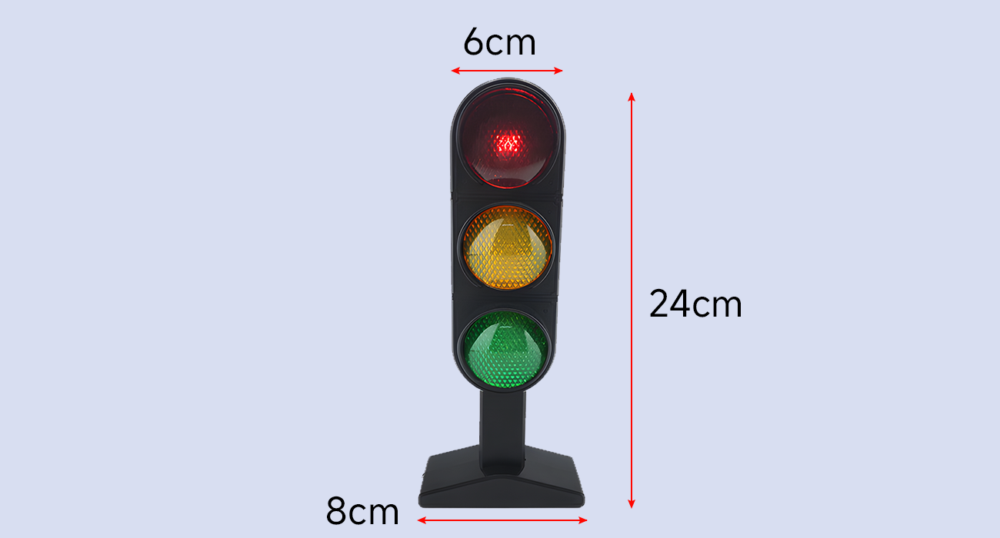
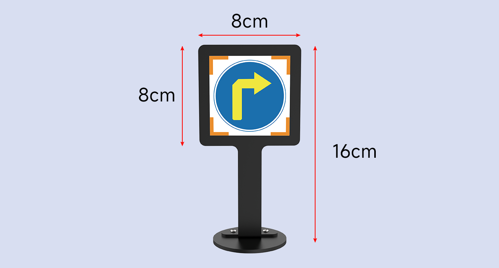

交通标志与红绿灯识别
把 HP60C 拍到的画面变成两路标准话题：HSV 颜色分割判定红绿灯红/黄/绿三态发 /traffic/light，NPU 上的 YOLO 检测直行/转向/停车/注意行人四类标志发 /traffic/sign——验收标准：三态灯识别准确率 ≥95%、四类标志 mAP 达标且置信度可调，光照变化后 5 分钟内完成重标定。
01本节目标
- 启动 HP60C 相机驱动，核对
/ascamera_hp60c/**话题树，明确 0.5m 近盲区对识别距离的约束（识别距离应保持 0.3~0.8m）。 - 讲清 HSV 颜色分割为什么能判灯态：H 通道与色调的对应关系、阈值窗口、形态学去噪三件套。
- 完成红绿灯三态（红/黄/绿）识别节点，输出
/traffic/light话题（data: R/Y/G）。 - 完成四类交通标志（直行/转向/停车/注意行人）NPU 检测，输出
/traffic/sign话题（类别 + 置信度）。 - 会做阈值与置信度调优：换光照/夜晚灯光下重新标定 HSV 区间，理解 mAP@0.5 与置信度阈值的取舍。
- 牢记：识别是 EXP-03 控制的输入——话题断 1 帧，路口状态机就少一分把握。
02核心原理：光如何变成话题——HSV 判灯与 NPU 检测双通道
把识别想成交通协管员：他盯灯用"颜色直觉"（这盏灯发红光——色相对了就是红灯，亮不亮只是阈值问题），认标志用"图形记忆"（圆形蓝底带箭头=直行）。第一条通道 HSV 颜色分割正对应"直觉"：RGB 三通道把亮度和颜色搅在一起，转到 HSV 后 H（色调）单独承载"是什么颜色"——红灯 H≈0-10 或 170-180（红环抱 0°），绿灯 H≈35-85，黄灯 H≈20-35，各留 ±10 窗口吸收 LED 色偏与白平衡漂移；S、V 通道卡"够不够饱和、够不够亮"排除反光与暗影，再用开运算去掉标线反光的碎斑，取连通域最大者判定灯态。
第二条通道 YOLO + NPU 对应"图形记忆"：四类标志长得像（都是牌面），靠颜色会翻车——直行/转向是蓝底白图案，停车是红圈白底，注意行人是黄三角。yolov8n 在 PC 上训好 → 转 RKNN INT8 → 塞进 C1 的 6 TOPS NPU，前向推理吃掉大头 CPU；输出框经 NMS 去重后按置信度过滤，封装成 std_msgs/String JSON 发 /traffic/sign。两路话题合流，EXP-03 的状态机才有"灯态 + 交规牌"两本经。
| 话题 | 类型 | 频率 | 消费方 |
|---|---|---|---|
/traffic/light | std_msgs/String：R / Y / G | 10 Hz（三帧稳定后发布） | EXP-03 路口状态机、EXP-04 路测评分 |
/traffic/sign | std_msgs/String：{cls, conf, dist} | 15 Hz（NPU 推理节流） | EXP-03 转向决策、EXP-04 按标志改道 |
/ascamera_hp60c/color_image | sensor_msgs/Image | 30 fps | 识别节点唯一输入源 |
03硬件与场景
| 先决检查 | 标准 | 不达标后果 |
|---|---|---|
| 相机画面 | ros2 topic hz /ascamera_hp60c/color_image ≈30Hz | 识别节点空转，/traffic/* 无输出 |
| 模型文件 | traffic_sign.rknn 校验和与版本记录 | 类别错位，四类混淆 |
| 光照基线 | 开灯状态拍 10 帧存参考图 | 换灯后无对照，误判"识别坏了" |
| NPU 占用 | rknpu2 服务在跑、无其他模型抢占 | 推理排队、帧率掉到 5Hz |


04操作步骤
hp60c.launch.py → 确认话题树与帧率
截三态灯帧 → trackbar 拖阈值 → 存 hsv_config.yaml
分割+形态学+最大连通域 → 三帧稳定 → 发 /traffic/light
yolov8n 数据增强 → RKNN INT8 → 部署 → 发 /traffic/sign
置信度滑杆、换光照重标定 → 20 轮三态+四类回归测试
- HSV 标定：分别在红/黄/绿亮灯时截帧，开 trackbar 拖 H/S/V 三组上下限，直到掩膜只剩灯窗、文字反光被 S≥60 滤掉；把均值写入
hsv_config.yaml，禁止把阈值硬编码进节点。 - 三帧稳定：连续 3 帧判定一致才发布，防 LED 频闪与压缩噪点造成 R/Y/G 抖动；发布后
ros2 topic echo /traffic/light人工对表 10 轮。 - NPU 链路：PC 上用 1500+ 张四类增强数据（旋转/亮度/侧角）训 yolov8n → export ONNX → rknn-toolkit2 转 INT8（校准集 200 张）→ 拷贝到 C1 加载，
rknpu2_server占用确认。 - 性能核对：NPU 推理延迟打印 <15ms，端到端 /traffic/sign 频率 ≥15Hz；置信度阈值初始 0.55，误检多升 0.05，漏检多降 0.05——每次调整记录在调参表。
- 光照鲁棒：关顶灯/开台灯/夜晚三种光照各跑 20 轮回归，绿灯误判红灯 ≤1 次；换光照后 5 分钟内完成重标定是验收硬指标。
- 留痕：保存 hsv_config.yaml、rknn 版本、20 轮混淆矩阵截图，作为准确率 ≥95% 的证据。
05关键命令
相机与 YOLO 部署口径与《培训方案》xlsx 一致（ascamera hp60c.launch.py、python src/app.py、--model rknn）。
# ① 启动 HP60C 相机并核对话题树（EXP-01 用不到相机，本实验起全程在线） ros2 launch ascamera hp60c.launch.py ros2 topic list | grep ascamera_hp60c ros2 topic hz /ascamera_hp60c/color_image # ≈30Hz # ② 截帧做 HSV 标定（三态灯各一张）+ 运行灯态识别节点 ros2 run image_tools cam2image --ros-args -p output_image:=/tmp/red.png python3 src/light_node.py --config config/hsv_config.yaml ros2 topic echo /traffic/light # 期望 R / Y / G 稳定输出 # ③ 手动发布一条灯态供 EXP-03 联调（无相机时的替身） ros2 topic pub --once /traffic/light std_msgs/String "{data: 'R'}" # ④ YOLO 训练→NPU 部署（PC 训练，C1 推理） yolo train model=yolov8n.yaml data=traffic_sign.yaml epochs=120 imgsz=640 python3 src/export_rknn.py --model best.pt --quantize int8 --platform rk3588 python3 src/app.py --model models/traffic_sign.rknn --topic /ascamera_hp60c/color_image # ⑤ 观察检测输出 / 端到端延迟 ros2 topic echo /traffic/sign # {cls, conf, dist} ros2 topic hz /traffic/sign # ≥15Hz
06原理动画：HSV 判灯链路与 NPU 检测管线
07互动实验：四类标志识别小测
答题时留意阈值滑杆：把它推到 0.90 后再抽 5 题——现实中过高的置信度门槛会让 "注意行人"这类小目标最先漏检；推到 0.30 又会把阴影当成"停车"。0.45~0.65 是本沙盘的甜点区。
08常见问题
09拓展阅读
- OpenCV 官方 HSV 教程：inRange + morphologyEx 开闭运算的标准姿势——本课灯态节点的全部原型。
- rknn-toolkit2 文档：INT8 量化校准集怎么选（本课：三光照 × 200 张）——校准集差，mAP 掉一半的故事每天都在发生。
- YOLOv8 官方仓库：--conf/--iou 推理参数与 PR 曲线绘制，配合本页互动面板的阈值直觉一起看。
- C1 产品页：6 TOPS NPU 与 HP60C 规格原始口径（仓库 products/c1-car）。
- 上一实验：EXP-01 的语义点位——灯口坐标就是本实验相机预置机位的取点来源。